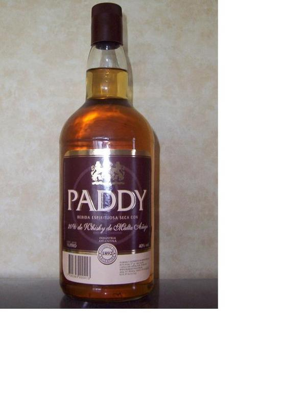

My parents brought this back from Argentina a number of years ago. Most of it went into a Christmas cake...
I think it was a malt, but I can't remember. I might have info on it somewhere.
NOTE: This forum is no longer active. This is an archive copy of the forum as it was on 10 March 2018.
Paddy Argentinian whisky
6 posts
• Page 1 of 1
Paddy Argentinian whisky
 by JohnM » Wed Aug 05, 2009 1:44 pm
by JohnM » Wed Aug 05, 2009 1:44 pm
- Attachments
-
- 
- paddy.jpg (31.29 KiB) Viewed 1545 times
- JohnM
- Fully mature Cask
- Posts: 1634
- Joined: Wed Mar 18, 2009 9:02 pm
Re: Paddy Argentinian whisky
 by IrishWhiskeyChaser » Wed Aug 05, 2009 2:28 pm
by IrishWhiskeyChaser » Wed Aug 05, 2009 2:28 pm
Well on the label is says "20% de Whisky de Malta A*g*" can't make out the last word ???
So I'm guessing that is either 20% malt whisky or 20% Maltese whisky
A nice curio though and quite possibly an Irish link as there is quite an Irish-Argentine presence over there since famine times
So I'm guessing that is either 20% malt whisky or 20% Maltese whisky
A nice curio though and quite possibly an Irish link as there is quite an Irish-Argentine presence over there since famine times
Sláinte Adrian
- IrishWhiskeyChaser
- Site Admin
- Posts: 2910
- Joined: Tue Mar 17, 2009 1:37 pm
- Location: A Dark Dunnage somewhere in Galway
Re: Paddy Argentinian whisky
 by JohnM » Wed Aug 05, 2009 3:28 pm
by JohnM » Wed Aug 05, 2009 3:28 pm
Yeah, I wish I had a bottle to keep too. Just shows you... If that was the Scotch Malt Whisky Assoc. or whatever they're called, there would be war over that. That said, IDL did take Cooley to court over St Patrick's, so they may have done the same with this one.
- JohnM
- Fully mature Cask
- Posts: 1634
- Joined: Wed Mar 18, 2009 9:02 pm
Re: Paddy Argentinian whisky
 by PureDrop » Wed Aug 05, 2009 5:57 pm
by PureDrop » Wed Aug 05, 2009 5:57 pm
see http://www.actraltda.com/index.php?valor=cachacagindestilados (bottom of page)
and from here, we find your missing word ...añejado (meaning aged/old) and the producer:
Bebida Espirituosa Seca
Cont. Neto 1000cm3 - Graduación 43°
Elaborado y Envasado por Guillermo Padilla LTDA S.A. - 25 de Mayo 195 - Bs.As.
A base de malta añejado en casco de roble (al 12% expresado en alcohol absoluto) y alcohol de cereales argentinos
Interesting!
and from here, we find your missing word ...añejado (meaning aged/old) and the producer:
Bebida Espirituosa Seca
Cont. Neto 1000cm3 - Graduación 43°
Elaborado y Envasado por Guillermo Padilla LTDA S.A. - 25 de Mayo 195 - Bs.As.
A base de malta añejado en casco de roble (al 12% expresado en alcohol absoluto) y alcohol de cereales argentinos
Interesting!
-

PureDrop - Rundlet Cask
- Posts: 185
- Joined: Tue Apr 07, 2009 2:36 pm
Re: Paddy Argentinian whisky
 by DavidH » Wed Aug 05, 2009 6:07 pm
by DavidH » Wed Aug 05, 2009 6:07 pm
OK, I'll chip in an automated translation of the page Michael found:
If it's a Pernod Ricard brand that explains why it wasn't sued out of existence.
Paddy Whiskey is a blend made with imported Scottish malts from different distilleries first rate and grain whiskeys aged Argentino, possessing a unique and special flavor. Paddy is a unique spirit of great taste and versatility, always with the quality that supports a wide line as Pernod Ricard, which makes it a product of quality and reputation in a market volume.
It can be used with a bit of pure ice, with water or as the main ingredient for different cocktails.
Paddy is a product has high turnover that allows the intermediary to generate a large volume and value thanks to the left margin to the intermediary.
Paddy is one of the leading brands in this segment in Argentina, so it enters the market to meet the needs boliviano drink high quality at low cost.
If it's a Pernod Ricard brand that explains why it wasn't sued out of existence.
-

DavidH - Fully mature Cask
- Posts: 1280
- Joined: Tue Mar 17, 2009 7:49 pm
- Location: Dublin
Re: Paddy Argentinian whisky
 by JohnM » Wed Aug 05, 2009 11:02 pm
by JohnM » Wed Aug 05, 2009 11:02 pm
Look at the Paddy signature on that link - it's the same as the Paddy in Paddy Flaherty. Interesting.
- JohnM
- Fully mature Cask
- Posts: 1634
- Joined: Wed Mar 18, 2009 9:02 pm
6 posts
• Page 1 of 1